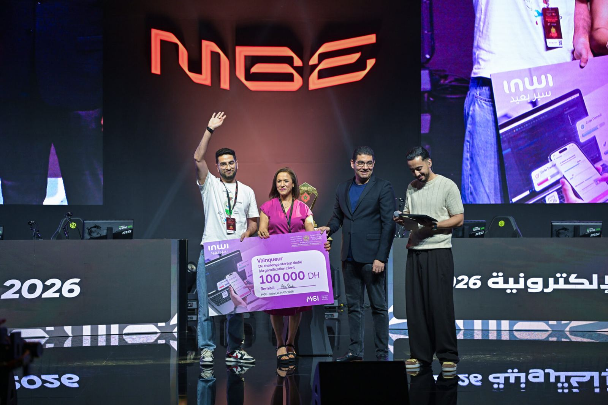

Conferences · Tech
Morocco Gaming Expo 2027
- Dates
- Dates TBA
- Venue
- Sofitel Jardin des Roses (2026 venue; 2027 venue TBC)
- Location
- Rabat, Morocco
- Format
- In-person
- Category
- Tech
- Industry
- Gaming industry expo
- Organiser
- Morocco Gaming Expo
- Official website
- https://moroccogamingexpo.ma/en/home/
About
Official home page (fetched 24 Nov 2026) says 'Stay tuned for the next edition in 2027' and still describes the 2026 expo at the Sofitel Jardin des Roses in Rabat, opened by Crown Prince Moulay El Hassan. 2027 dates and venue were not published. Morocco dates are local (Africa/Casablanca; typically UTC+1, with occasional Ramadan clock changes).
Topics: video games, esports, game development, industry talks.
No organiser attendance figure found on the official pages checked (24 Nov 2026). Ranked by an estimated size tier 'medium' (our judgement from format, venue and scale, not an official number).